Mission Planner操作手册
点击链接观看视频：MP改参数
1 准备工作
感谢您选用我们的导航板卡，我们的板卡适用于Ardupilot固件+Pixhawk硬件（或衍生硬件）组成的飞控平台，提供高精度的定位（定向）数据。具体指标请参考对应板卡手册。
本文档对需要在MissionPlaner地面站中进行的操作进行了说明。
在开始配置前，请准备好下列物品：
- 导航板卡。
- Pixhawk兼容飞控硬件，固件建议使用官方正式版本。
- 差分服务账号，千寻位置，六分科技等。或自建基站，如B50，B72，B80，B94或B92。
关于FMU V2
早期的Pixhawk飞控FMU V2版本因Flash空间为1M，在适配飞控固件时裁剪了相关代码，因此在某些较新固件版本（如4.3.x）上RTK定位或定向功能无法正常工作，请避免使用FMU V2版本的飞控。
FMU V3，V4，V5，V6版本飞控都可正常使用。
3 硬件连接
以Pixhawk 6C，B92为例，下图为连接飞控GPS1示意图。
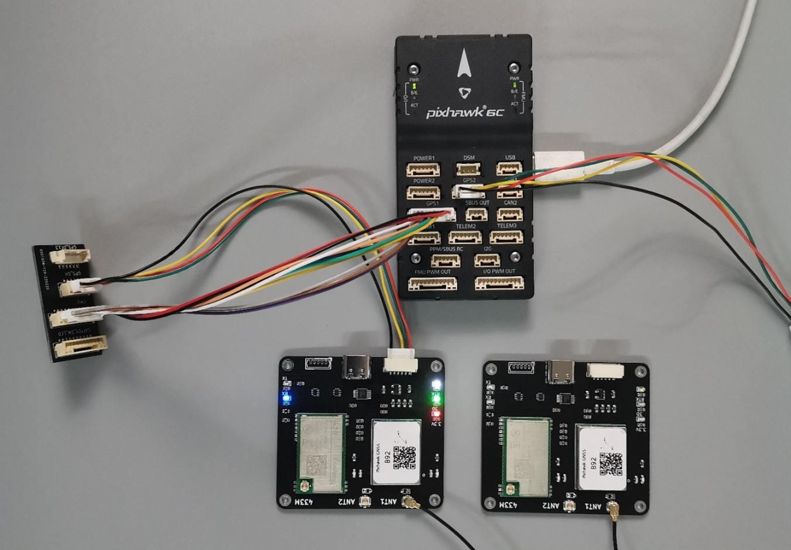
Pixhawk 6C的GPS 1 接口集成了安全开关，LED功能，如希望继续使用安全开关，LED功能，通过一个转接板连接，转接板说明如下图。此转接板断开了原装GPS的串口，连接了B92板卡的串口。
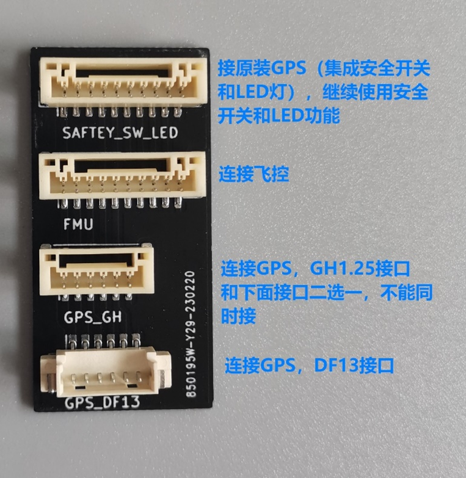
我们所有板卡的GH1.25接口都参照Pixhawk4/6的接口定义设计，这两种飞控可使用板卡附带的线束直插连接，不需要用户调整线序。
下图为Pixhawk4/6的接口定义和我公司板卡接口定义。

| 引脚 | Pixhawk4/6定义 | 板卡定义 |
|---|---|---|
| ① | VCC 5V输出 | VCC 5V输入 |
| ② | TXD发 | RXD收 |
| ③ | RXD收 | TXD发 |
| ④ | SCL | 空 |
| ⑤ | SDA | 空 |
| ⑥ | GND | GND |
如使用其它飞控，请自行确认或调整线序符合上图中的对应关系，特别注意飞控的TX接板卡的RX，飞控的RX接板卡的TX。
以Pixhawk 6C，B92为例，下图为连接飞控GPS2示意图。
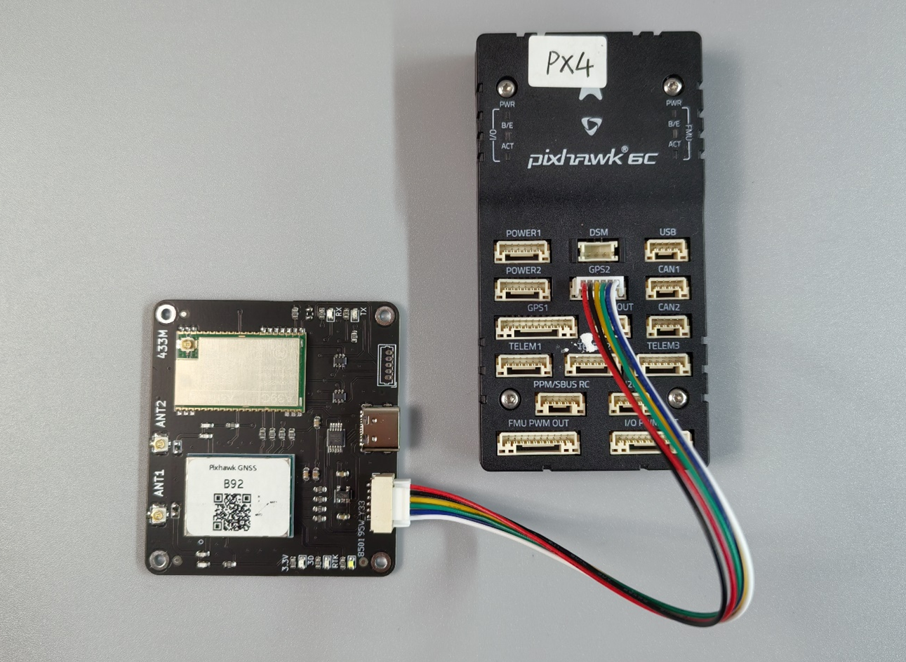
以Pixhawk2.4.8，B92为例，下图为连接飞控GPS1示意图。
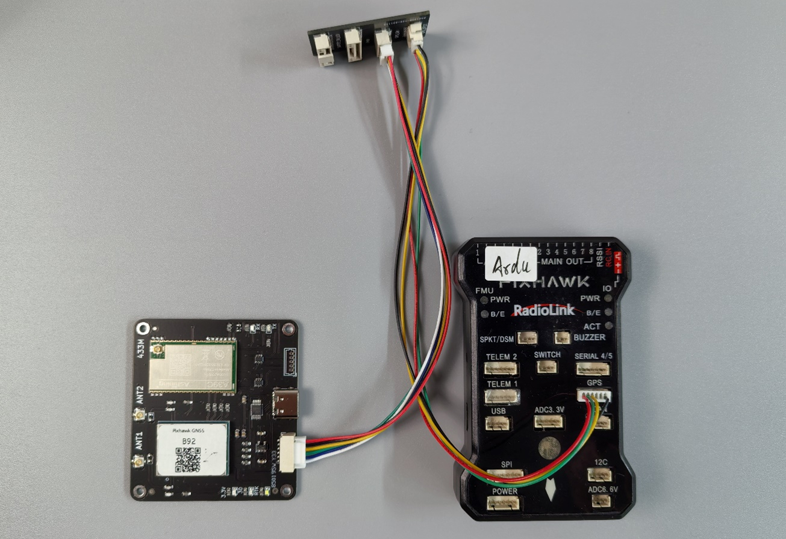
4 第三方差分服务（Ntrip连接）
以千寻位置为例，您需要用户名，密码，以及服务器地址（域名），端口号（port），挂接点（MountPoint）等信息，这些信息在下一步MissionPlaner的配置中将要用到。如果不清楚，可到您的服务商网站登录后查看。其它差分服务商与千寻类似。
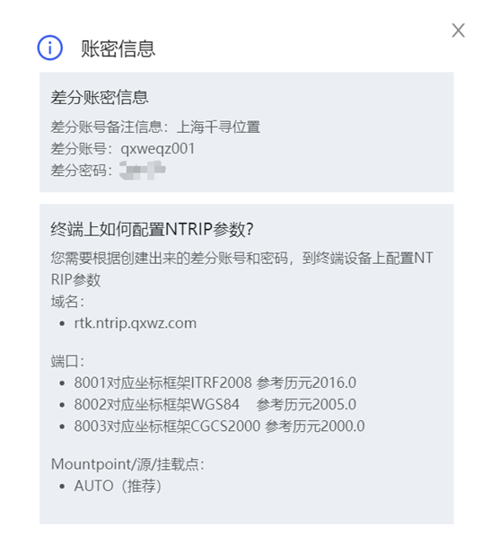
激活账号
使用前请确认差分账号已激活，差分账号和密码不是千寻网站的登录账号和密码。
5 自建基站
如使用B50作为自建基站，请将B50通过USB串口或蓝牙串口连接电脑。注意B50从上电到输出差分数据需要3分钟左右，请提前准备好。更详细资料请参考B50使用手册。
如果使用B72，B80，B92作为自建基站，则不需要连接电脑。差分数据通过集成的数传模块直接发送到飞机端的对应板卡。
6 Mission Planer配置
1. MP修改参数
这里以修改GPS_TYPE参数为例做步骤说明，其它参数的修改操作步骤相同。
将您的Pixhawk和电脑连接，打开MP，选择正确的端口后点击连接。
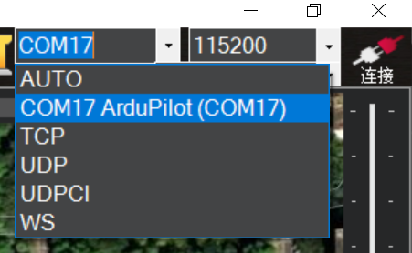
依次点击配置/调试-->全部参数表

在搜索框中输入GPS_TYPE后出现以下界面
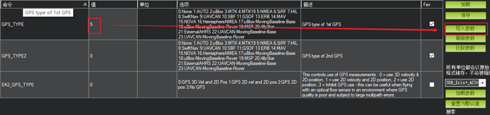
双击上图中蓝色的位置，键盘输入将1改为5，然后点击写入参数

点击好的确认
出现下面窗口参数写入成功。
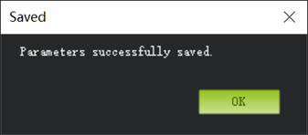
说明
此配置只需执行一次，参数已保存在飞控板EEPROM上，即使掉电也无影响，后续使用无需再次配置。
点击飞行数据返回以下界面
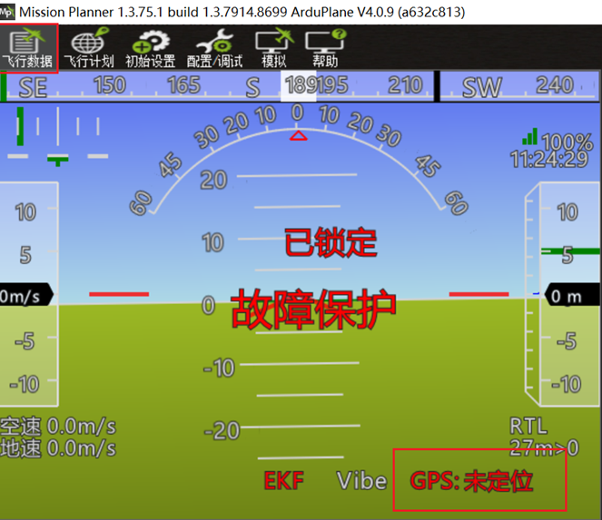
此时可以看到GPS显示为未定位，表示飞控已经正确识别导航模块，只是未定位状态。 请将GPS天线移至窗边或户外。稍等片刻即可看到下图所示。
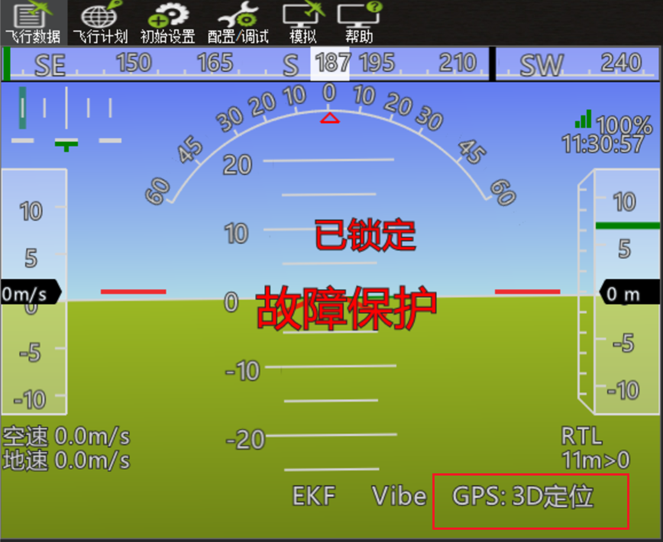
此时已定位。
2. 连接差分数据
注意
仅在使用CORS或B50自建基站需要此操作，使用B72/B80/B92等自建基站时请跳过此节。
在下一步操作前请确认上图中GPS已处于3D定位状态，否则有可能会出错。
点击初始设置-->可选硬件-->RTK/GPS Inject来到以下界面
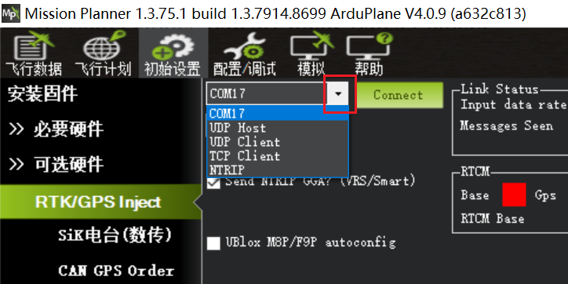
如使用B50，点击红框中的下拉箭头选择B50对应的端口COM
如使用CORS第三方差分服务，点击红框中的下拉箭头选择NTRIP

然后点击Connect ，出现以下窗口。
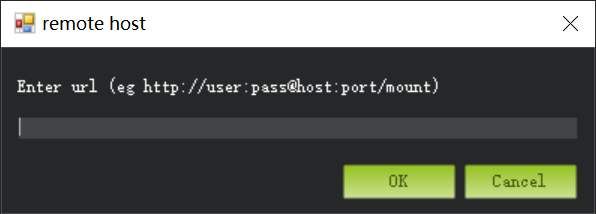
使用CORS
此时您的电脑需要连接互联网，以便访问差分服务的服务器。
此处需要输入您的差分服务账号信息，格式为：
http://用户名:密码@服务器域名:端口/挂载点
http://用户名:密码@rtk.ntrip.qxwz.com:8002/AUTO
8002
端口号对应不同的参考坐标系，所有的导航模块默认为WGS84，请选择8002端口，选择其它端口号不能正常工作。
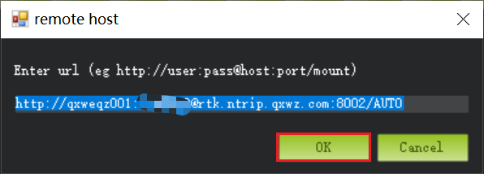
点击OK
出现以下界面表示差分服务连接成功。如果出现错误请确认CORS账号是否有效，电脑是否能连网。
使用B50在选择正确的端口COM并连接后会直接出现下面界面。
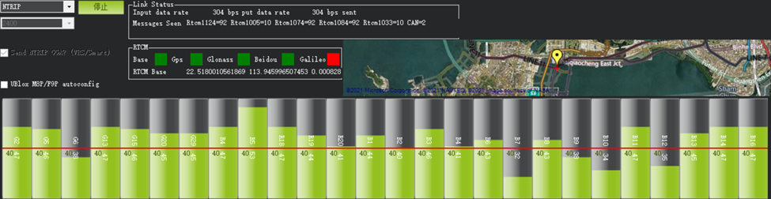
如果点击连接后MP中没有出现上图的绿色柱子，也没有反应，请检查是否设置了起始位置。
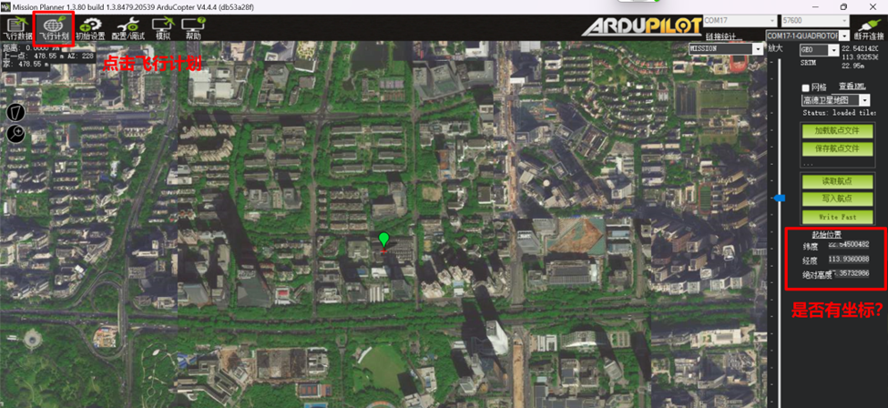
如果起始位置下面坐标为空，请在飞控GPS处于3D定位的状态下点击一下起始位置。
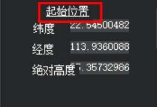
回到连接CORS界面，点击 Connect，此时应出现上图中绿色柱子图，表示B50自建基站或CORS服务已连接成功。
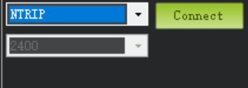
再次点击飞行数据回到下图界面
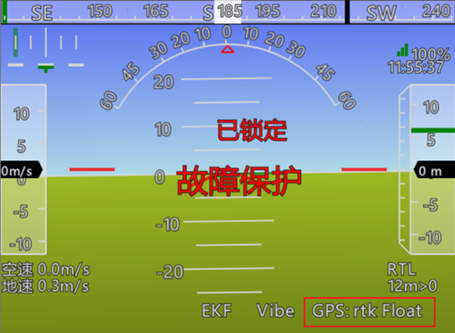
图中红框表示导航模块已进入RTK Float状态，至此配置步骤全部完成。如要达到rtk Fixed状态请确保处于开阔无遮挡环境。
3. 查看GPS原始数据
在MP主界面下按Ctrl+F键，出现如下窗口。
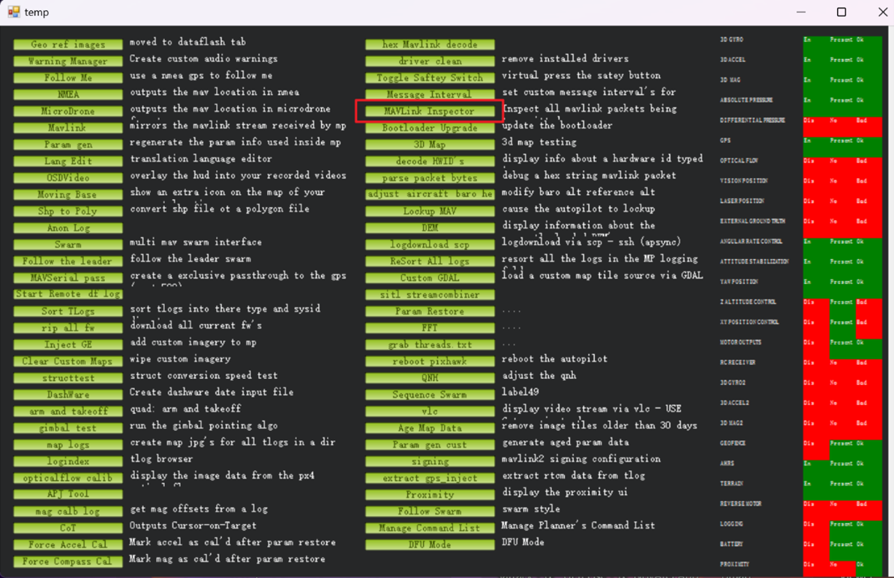
点击红框中的MAVLink Inspector按钮，出现如下窗口。
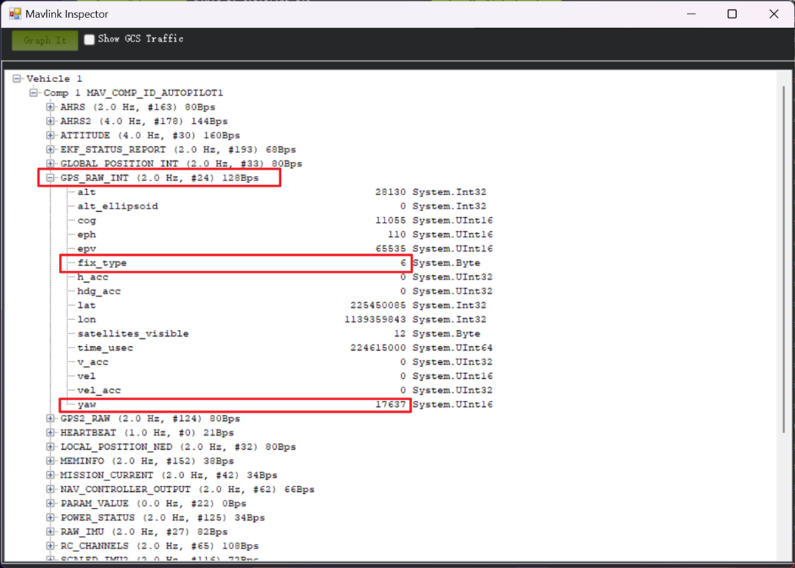
红框中即为GPS的原始数据，如果板卡连接在飞控GPS2接口上，则查看GPS2_RAW。
刷新率
上图红框中显示2.0Hz（刷新率）为MP软件bug，不影响正常使用。
7 板卡对应参数
不同型号的板卡在Mission Planner中需要修改的参数不完全相同，请点击下面的型号标签查看需要修改的参数列表。
GPS_TYPE 5
SERIAL3_BAUD 115
GPS_RATE_MS 200 (5Hz刷新率)
GPS_TYPE 5
SERIAL3_BAUD 115
GPS_RATE_MS 100 (10Hz刷新率)
GPS_AUTO_CONFIG 0 （不自动配置）
GPS_TYPE 5
SERIAL3_BAUD 115
GPS_RATE_MS 100 （10Hz刷新率）
GPS_AUTO_CONFIG 0 （不自动配置）
AHRS_EKF_TYPE 3
EK3_ENABLE 1
EK3_MAG_CAL 5
EK3_SRC1_YAW 2
COMPASS_ENABLE 0
COMPASS_USE 0
COMPASS_USE2 0
COMPASS_USE3 0
GPS1 or GPS2?
以上参数为假设板卡连接在Pixhawk的GPS1插座上，如果连接在GPS2/UART4插座上，
则参数对应如下，其它参数不变。
GPS_TYPE2
SERIAL4_BAUD
GPS_RATE_MS2
如果连接飞控的其它接口，请查阅飞控硬件说明及Ardupilot参数表确定对应参数。
上述参数对Ardupilot的不同固件Rover，Plane，Copter都适用，请确保固件版本在V4.1.0以上，推荐使用最新稳定版固件。全部参数修改完成后建议Pixhawk重新上电一次。
Bug1
如使用B80，B84，B92，B94，B96请使用飞控固件版本4.4.0以上。4.4.0之前版本有bug，RTK固定解有可能无法正确识别，并且HUD界面显示无GPS。但3D定位识别及显示正常。
Bug2
当使用GPS2接口时，不要将 GPS_TYPE 设为0来禁用GPS1，某些固件版本有bug，重启后无法正确识别GPS2。如果GPS1不存在或为普通精度，飞控会自动使用精度高的GPS2工作。
 欢迎扫码访问
欢迎扫码访问